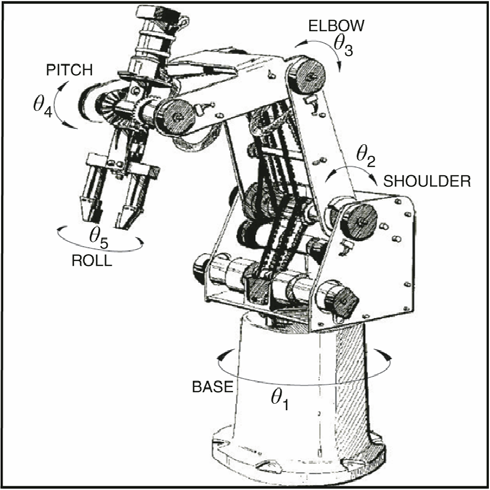
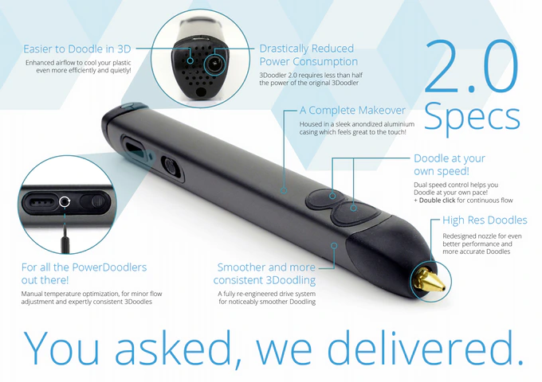
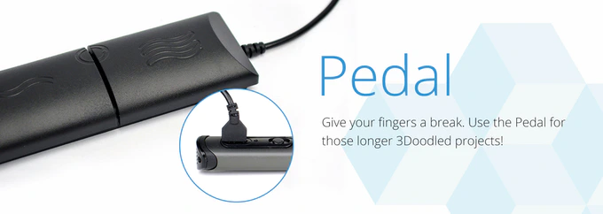
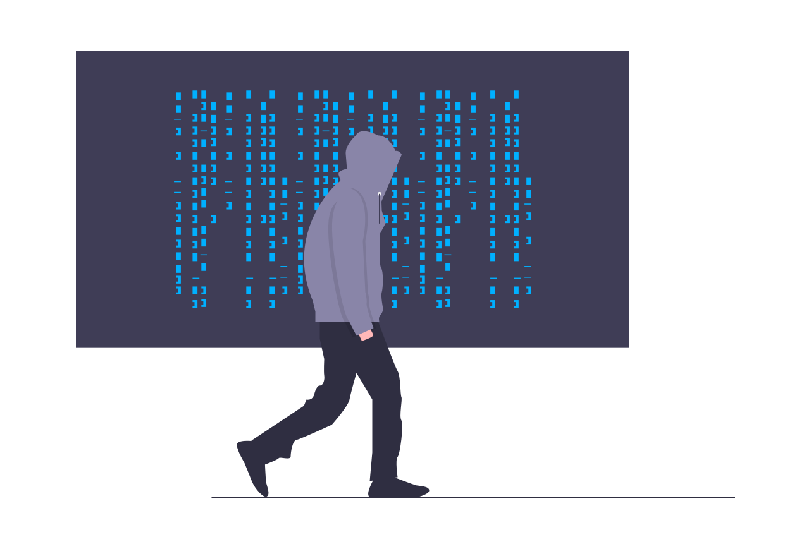

Trương Đức Vũ
Bachelor in Electrical & Electronics Engineering, major in Automation & Control
Ho Chi Minh city University of Technology - HCMUT
Year of graduation: 2016
GPA: 7.77/10
Graduate thesis: 3D printing with robot arm
SCORBOT ER 5 plus
Filament extruder
3Doodler 2.0
Hacking the 3D pen
Control port has 3 pins: VCC, GND and digital input
Slicing 3D object into meshes and control print paths
Algorithm taken from SuperSkein:
MaskedRetriever/SuperSkeinPrint paths are represented in G-code, then translated to ACL commands and sent to Scorbot's driver via RS232.
2 separate mini CLI programs: slicer and intepreter. Both written using C#.
After graduation
Decide to work in IT field to gain industry experience and fortify programming skills
2016-2017: Hitachi Vantara Vietnam
~~NewTech department~~
Research potential technologies to help company kickstart new business as solution provider beside outsourcing business.
Constraint programming
A sub-field of Artificial Intelligence
Gecode
Google's OR-tools
To put it simply:
-
Problems are defined as finite search space and constraints.
-
Search strategies varies: breadth-first, depth-first, score-based, etc..
-
Constraints are rules to eliminate unpromising search branches. In other word, constraints help shrinking the search space so the acceptable result is reached faster.
Others
-
Support IoT team on hardware and embedded software development.
-
Demo VR application to visualize network package path using Unreal Engine.
-
Demo iOS app to track vehicles and traffic.
-
REST API to tune hyper parameters of Deep Learning model.
2017-2018: Indie developer, freelancer
-
Made android app using Kotlin when Kotlin support is still beta.
-
Part-time web content evaluator. Experience how large-scale data labeling process really like.
2018-2020: DEK Technologies
Work as system developer. Has some minor contributions in Middleware development for Ericsson.
Acquired knowledge about:
-
Redundancy model for nodes in clusters.
-
Service life-cycle, logging and errors elevation in a system.
-
Traffic-generator for testing various functionalities of the system.
2020-now: Uniduc Robotic
Research collaborator

Projects involved:
-
Control BLDC motor for custom built robot joint. The work is based on ODrive project.
-
Design architecture and implement core parts of management hub for Uniduc's ecosystem. Also work as coordinator between different teams (vision, embedded, mobile app).
Details on management hub
-
Daemon service on robot, connect to server using SocketIO.
-
Flask server for management and provide API for clients.
-
UI/UX design using Figma.
-
Planning on integrating AWS's DynamoDB into the ecosystem for better scaling, backup and throughput.
Side projects
Mostly on Github: InNoobWeTrust
-
Made a clone of a popular puzzle game in Vietnam, using Unity3D. (EndlessPikachu)
-
Manga reader (Android): serious project as an indie developer. Failed to gain money for a living but learned a lot. (KINTAMAnga)
-
Learn Rust by making game: only use low-level display/sound library, no game engine, only pure Rust. (meme-connect)
Life-long learning
-
Learn things from courses on Coursera, Edx, Udemy, MOOCs on Youtube, etc..
-
Learn new languages as there is a chance. Good to boost the brain and allow seeing things in different perspectives.
Hobbies
-
Technologies, especially those around robots and artificial intelligence.
-
Learn new things, experience new ways of doing things. Gaining knowledge about everything.
-
Reading books.
-
Occasionally: art, music, psychology, cooking. Love to have a balance between both brain's hemispheres.